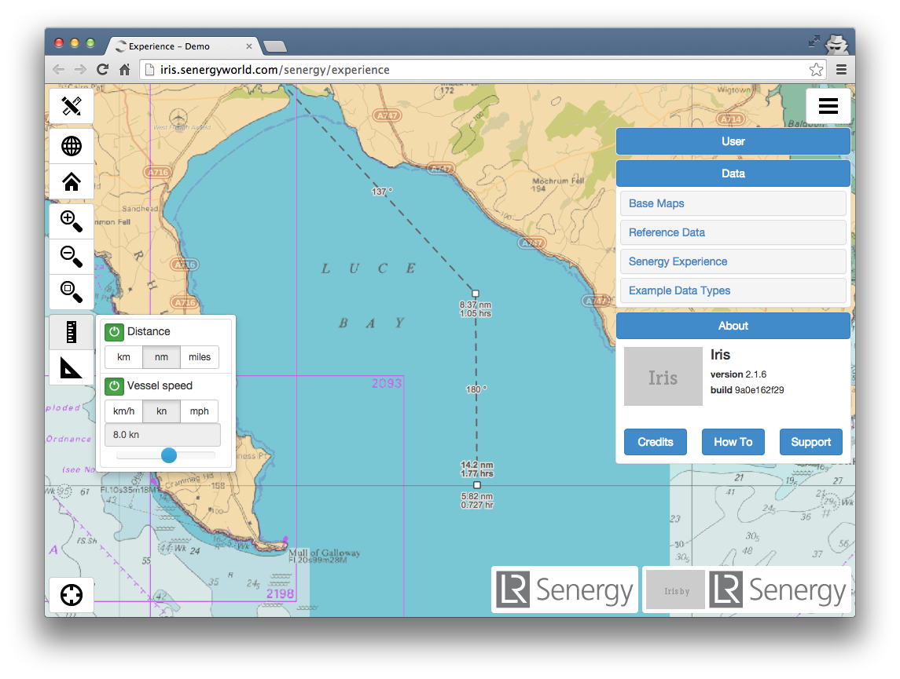
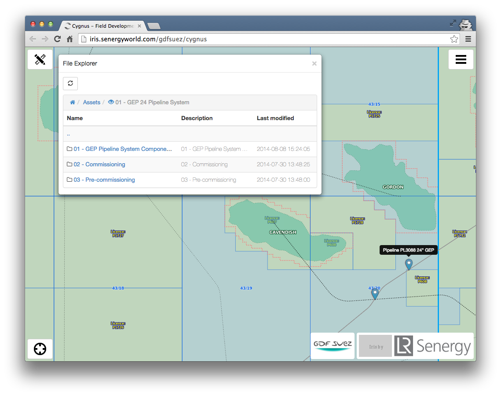

Greetings
"An open source geospatial implementation case study from the Energy sector"
about/me
Sam Franklin
GIS Manager @

@samfranklin
sam.franklin@lr-senergy.com
Why am I here
?
Be a good open source citizen

act1 - what we did first
act2 - what we're doing now
act3 - what worke/ what failed / what's next
>> Is this PDF the latest version?
>> No, I thought Bob emailed you?
>> Bob's on holiday
uh-oh...
licence frustration

real time data

< quick deployment
Great, what do we need and how?
 non WGS CRS support
non WGS CRS supportoutsource or on-prem ArcGIS Server?
time and cost prohibitive
arcgis online =! ASP licencing issue

open source gives you access to the ingredients

the wall of terror
deployed £35/pm hosted GeoServer/postgis server
very capable mentoring from

and


deployment
"If you are not embarrassed by the first version of your product, you've launched too late."
--Reid Hoffman (LinkedIn co-founder)
Minimal Viable Product
what then?
got some clients
momentum

hired a geospatial web developer. yay! [Thank goodness]
version 2.1.7 of 'iris'
servers

+

server apps

+

Geoserver
client side = JQuery/Bootstrap + OpenLayers2
bespoke marine planning tools
custom dashboards via Highcharts
multi-source realtime vessel tracking with history
UI-map-file explorer interaction
navigation charts TMS from Find
custom marine tilled basemapping
...using tilemill // mapnik xml // mapproxy = sweet.
Tilled CAD data? Yes. Seriously
not a perfect world...web mercator distortion
eyes open
GMT + GDAL survey grid processing
survey XYZ = multi-area complexity + mega nodata
bash + OGR makes for a happy database
postgreSQL = 1-master 2-slaves
start using GIT. At once!
google form=user feedback
#FAIL
QGIS implementation - ill-thought out
Free as in Freedom to fail
next?
vector tiles?
OpenLayers3 = w00t!
Fullstack JavaScript? NoSQL for application data + NodeJS ?
How to contribute?
"Do what you can, with what you have, where you are" - Theodore Roosevelt
Presentation made with Big from Tom MacWright